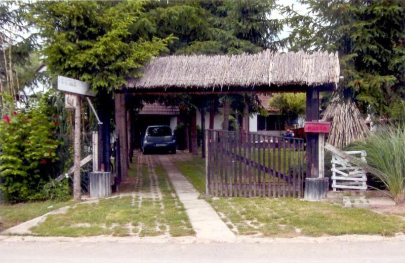
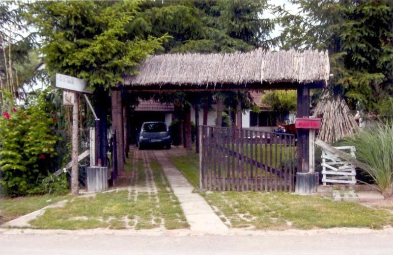

|  |  |
 |
 |
A ház lenti részén találhatóak a közös helységek, és két szoba. Az emeleten helyezkedik el további két szoba. Minden szobában két ágy található. Ágyneműt és törölközőt biztosítunk. Az étkezőben 8 személyes asztal áll, a konyhában 8 fő részére található étkészlet
|  | |
|
|
A ház legalább 2 éjszakára foglalható, rövidebb időre nem!
| Időtartam | 1-4 fő esetén | 5-8 fő esetén |
|---|---|---|
| 2 éjszakára | 48.000.-Ft | 64.000.-Ft |
| 3 éjszakára | 67.500.-Ft | 90.000.-Ft |
| 4 éjszakára | 84.000.-Ft | 112.000.-Ft |
| 5 éjszakára | 97.500.-Ft | 130.000.-Ft |
| 6 éjszakára | 108.000.-Ft | 144.000.-Ft |
| 7 éjszakára | 115.000.-Ft | 154.000.-Ft |
7 éjszakánál hosszabb tartózkodás esetén kérje egyedi ajánlatunkat!